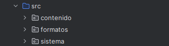
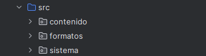

Acceso al sistema de ficheros. Java.nio
Proyecto Ficheros
Para probar y organizar los ejemplos propuestos en esta parte del temario, crearemos en IntelliJ un proyecto llamado Ficheros.
Dentro de este proyecto crearemos tres paquetes (sistema, contenido y formatos) para organizar los diferentes ejemplos, que en cada ocasión se indicará en que paquete deben ubicarse.
 |
|
Durante muchos años se ha utilizado la librería java.io para trabajar con ficheros en el mundo Java. Se trata de un API muy potente y flexible que nos permite realizar casi cualquier tipo de operación. Sin embargo es una API complicada de entender. Java.nio (New IO) es una nueva API disponible desde Java7 que nos permite mejorar el rendimiento, así como simplificar el manejo de muchas operaciones.
Java.nio define interfaces y clases para que la máquina virtual Java tenga acceso a archivos, atributos de archivos y sistemas de archivos. Aunque dicho API comprende numerosas clases, solo existen unas pocas de ellas que sirven de puntos de entrada al API, lo que simplifica considerablemente su manejo.
La interfaz java.nio.file.Path representa un path, y las clases que implementen esta interfaz puede utilizarse para localizar ficheros en el sistema de ficheros. Nos permite manejar rutas al estilo GNU/Linux y rutas al estilo Windows dependiendo del SO en el que estemos trabajando.
La clase java.nio.file.Files es el otro punto de entrada a la librería de ficheros de Java. Es la que nos permite manejar ficheros reales del disco desde Java.
Clases para la gesitón de ficheros
- Paths: Crea objetos Path desde cadenas de texto
- Path: Representa rutas a archivos o directorios
- Files: Permite operaciones sobre archivos usando Path
Ejemplos
Los siguientes ejemplos se incluirán en el paquete sistema dentro del proyecto Ficheros.
🔹Paths
La clase Paths es una clase de utilidad que proporciona métodos estáticos para crear objetos Path, que luego puedes usar con métodos de Files.
| Método | Descripción |
|---|---|
| get(String first, String... ) | Crea un objeto Path a partir de una o más cadenas. |
| get(URI uri) | Crea un Path desde un URI que debe ser del esquema file:///. |
El uso de Paths.get(...) en Java (o Kotlin) no implica que el archivo o directorio exista. Este método simplemente crea una instancia de Path que representa una ruta en el sistema de archivos, pero no accede al disco ni verifica su existencia.
🖥️ Ejemplo_get.kt
import java.nio.file.Path
import java.nio.file.Paths
fun main() {
val path1: Path = Paths.get("documentos", "archivo.txt")
val path2: Path = Paths.get("C:", "usuarios", "nombre", "archivo.txt")
println("Ruta 1: $path1")
println("Ruta 2: $path2")
}
🖥️ Ejemplo_uri.kt
import java.net.URI
import java.nio.file.Path
import java.nio.file.Paths
fun main() {
val uri = URI("file:///C:/usuarios/nombre/archivo.txt")
val path: Path = Paths.get(uri)
println("Ruta a partir de URI: $path")
}
🔹Path
La clase Path Se utiliza junto con la clase Files para realizar operaciones como lectura, escritura, copia, o eliminación de archivos.
La forma mas sencilla de construir un objeto que cumpla la interfaz Path es a partir de la clase java.nio.file.Paths, que tiene métodos estáticos que retornan objetos Path a partir de una representación tipo String del path deseado.
Por supuesto, no es necesario que los ficheros existan de verdad en el disco duro para que se puedan crear los objetos Path correspondientes.
Un objeto Path puede representarse de dos formas:
-
Ruta absoluta
val path = Paths.get("/home/usuario/archivo.txt") -
Ruta relativa
val path = Paths.get("documentos/ejemplo.txt") println(path.toAbsolutePath())
Las operaciones y métodos principales que se pueden hacer con Path son:
| Método | Qué devuelve | Descripción |
|---|---|---|
| .startsWith(Path other) | Boolean |
Devuelve true si el path empieza por el path dado. |
| .endsWith(Path other) | Boolean |
Devuelve true si el path termina con el path dado. |
| .getParent() | Path? |
Devuelve el path padre (superior) o null si no tiene. |
| .getRoot() | Path? |
Devuelve el componente raíz (/, C:\, etc.) o null si no existe. |
| .iterator() | Iterator<Path> |
Permite iterar sobre cada parte del path (carpetas y nombre final). |
| .toString() | String |
Devuelve el path como texto. |
| .toAbsolutePath() | Path |
Devuelve el path completo desde la raíz del sistema. |
| .resolve(Path/String) | Path |
Une dos partes de un path de forma correcta, manejando barras automáticamente. |
| .toFile() | java.io.File |
Convierte el Path en un File de la API tradicional de Java (java.io). |
🖥️ Ejemplo_Path.kt
import java.nio.file.Path
import java.nio.file.Paths
fun main() {
val path: Path = Paths.get("documentos/ejemplo.txt")
println("toString(): ${path}")
println("toAbsolutePath(): ${path.toAbsolutePath()}")
println("getFileName(): ${path.fileName}")
println("getParent(): ${path.parent}")
println("getRoot(): ${path.root}")
val otroPath: Path = Paths.get("imagenes/foto.png")
println("resolve(): ${path.resolve(otroPath)}")
val relativo: Path = path.relativize(Paths.get("documentos/otroArchivo.txt"))
println("relativize(): $relativo")
val rutaNormalizada: Path = Paths.get("carpeta/../archivo.txt").normalize()
println("normalize(): $rutaNormalizada")
println("startsWith(\"documentos\"): ${path.startsWith("documentos")}")
println("endsWith(\"ejemplo.txt\"): ${path.endsWith("ejemplo.txt")}")
}
🔹Files
La clase Files es el otro punto de entrada a la librería de ficheros de Java. Es la que nos permite manejar ficheros reales del disco desde Java.
Esta clase tiene métodos estáticos para el manejo de ficheros, los métodos de la clase Files trabajan sobre objetos Path. Muchos de estos métodos devuelven streams, lo que permite procesar archivos y directorios de forma eficiente y elegante.
En Java (y también en Kotlin), un Stream es una secuencia de elementos que permite realizar operaciones funcionales (como map, filter, forEach, etc.) sobre datos de forma eficiente y fluida, sin necesidad de estructuras intermedias ni bucles explícitos. Algunos método de Files utilizan o devuelven Streams.
Las operaciones y métodos principales a realizar con Files son:
| Método | Qué devuelve | Descripción |
|---|---|---|
| list(Path) | Stream<Path> |
Lista contenido directo (no recursivo) del directorio. |
| .walk(Path) | Stream<Path> |
Recorre directorios de forma recursiva. |
| .find(... ) | Stream<Path> |
Busca elementos que cumplan una condición. |
| .lines(Path) | Stream<String> |
Devuelve las líneas de un archivo de texto. |
| .exists(Path) | Boolean |
Verifica si el archivo existe. |
| .isDirectory(Path) | Boolean |
Verifica si es un directorio. |
| .isRegularFile(Path) | Boolean |
Verifica si es un archivo normal. |
| .isReadable(Path) | Boolean |
Verifica si se puede leer. |
| .createFile(Path) | Path |
Crea un archivo vacío. |
| .createDirectory(Path) | Path |
Crea un directorio. |
| .createDirectories(Path) | Path |
Crea directorios y subdirectorios necesarios. |
| .delete(Path) | void |
Elimina un archivo o directorio. |
| .deleteIfExists(Path) | Boolean |
Elimina si existe. |
| .move(Path, Path) | Path |
Mueve un archivo o directorio. |
| .copy(Path, Path) | Path |
Copia un archivo o directorio. |
| .size(Path) | Long |
Tamaño del archivo. |
| .getLastModifiedTime(Path) | FileTime |
Última modificación. |
| .getOwner(Path) | UserPrincipal |
Devuelve el propietario. |
| .getAttribute(Path, String) | Object |
Devuelve un atributo específico. |
🖥️ Ejemplo_permisos.kt: existencia y comprobación de permisos
import java.nio.file.Path
import java.nio.file.Paths
import java.nio.file.Files
fun main() {
val path: Path = Paths.get("documentos/ejemplo.txt")
println("path = $path")
println("exists = ${Files.exists(path)}")
println("readable = ${Files.isReadable(path)}")
println("writable = ${Files.isWritable(path)}")
println("executable = ${Files.isExecutable(path)}")
}
🖥️ Ejemplo_creardirectorio.kt: crear un directorio
import java.nio.file.Path
import java.nio.file.Paths
import java.nio.file.Files
import java.nio.file.FileAlreadyExistsException
import java.io.IOException
fun main() {
val path: Path = Paths.get("documentos")
try {
val newDir = Files.createDirectory(path)
println("Directorio creado en: $newDir")
} catch (e: FileAlreadyExistsException) {
println("El directorio ya existe: $path")
} catch (e: IOException) {
println("Error de entrada/salida: ${e.message}")
e.printStackTrace()
}
}
🖥️ Ejemplo_borrardirectorio.kt: elimina un directorio
import java.nio.file.Files
import java.nio.file.Path
import java.nio.file.Paths
fun main() {
val directorio: Path = Paths.get("c:/mi_directorio")
// Si ya existe, lo eliminamos
if (Files.exists(directorio)) {
println("El directorio ya existe. Borrándolo...")
Files.delete(directorio)
}
}
Gestión de errores y validaciones
El método delete(Path) borra el fichero o directorio o lanza una excepción si el borrado falla. El siguiente ejemplo muestra como capturar y gestionar las excepciones que pueden producirse en el borrado. Si el fichero o directorio no existe, la excepción que se produce es NoSuchFileException. Los sucesivos cath permiten determinar por que ha fallado el borrado:
import java.nio.file.*
import java.io.IOException
fun main() {
val path = Paths.get("c:/mi_directorio")
try {
Files.delete(path)
} catch (e: NoSuchFileException) {
System.err.printf("%s: no such file or directory%n", path)
} catch (e: DirectoryNotEmptyException) {
System.err.printf("%s not empty%n", path)
} catch (e: IOException) {
// Problemas de permisos u otros errores de E/S
System.err.println("Error: ${e.message}")
}
}
El metodo deleteIfExists(Path) tambien borra el fichero o directorio, pero no lanza ningun error en caso de que el fichero o directorio no exista.
🖥️ Ejemplo_copiardirectorio.kt: copiar directorios
Se puede copiar un archivo o directorio usando el método copy(Path, Path, CopyOption...). La copia falla si el archivo de destino existe, a menos que se especifique la opción REPLACE_EXISTING.
Se puede copiar directorios aunque, los archivos dentro del directorio no se copian, por lo que el nuevo directorio está vacío incluso cuando el directorio original contiene archivos.
import java.io.IOException
import java.nio.file.FileAlreadyExistsException
import java.nio.file.Files
import java.nio.file.Path
import java.nio.file.Paths
// import java.nio.file.StandardCopyOption // si se desea sobrescribir
fun main() {
val sourcePath: Path = Paths.get("documentos")
val destinationPath: Path = Paths.get("documentos/destino")
try {
Files.copy(sourcePath, destinationPath)
// Para sobrescribir si ya existe, descomenta la siguiente línea:
// Files.copy(sourcePath, destinationPath, StandardCopyOption.REPLACE_EXISTING)
println("Copia realizada con éxito.")
} catch (e: FileAlreadyExistsException) {
println("El fichero o directorio ya existe en el destino.")
} catch (e: IOException) {
println("Error al copiar: ${e.message}")
e.printStackTrace()
}
}
🖥️ Ejemplo_copiarficheros.kt: copiar ficheros
import java.io.IOException
import java.nio.file.FileAlreadyExistsException
import java.nio.file.Files
import java.nio.file.Path
import java.nio.file.Paths
import java.nio.file.StandardCopyOption
fun main() {
val sourcePath: Path = Paths.get("documentos/ejemplo.txt")
val destinationPath: Path = Paths.get("documentos/ejemplo_copia.txt")
try {
Files.copy(sourcePath, destinationPath, StandardCopyOption.REPLACE_EXISTING)
println("Archivo copiado correctamente a: $destinationPath")
} catch (e: FileAlreadyExistsException) {
println("El archivo destino ya existe.")
} catch (e: IOException) {
println(" Error al copiar el archivo: ${e.message}")
e.printStackTrace()
}
}
🖥️ Ejemplo_moverficheros.kt: mover ficheros y directorios cambiando el nombre.
import java.io.IOException
import java.nio.file.FileAlreadyExistsException
import java.nio.file.Files
import java.nio.file.Path
import java.nio.file.Paths
import java.nio.file.StandardCopyOption
fun main() {
val sourcePath: Path = Paths.get("documentos/ejemplo.txt")
val destinationPath: Path = Paths.get("documentos2/ejemplo2.txt")
try {
Files.move(sourcePath, destinationPath, StandardCopyOption.REPLACE_EXISTING)
println("Archivo movido/renombrado correctamente a: $destinationPath")
} catch (e: FileAlreadyExistsException) {
println("El archivo destino ya existe.")
} catch (e: IOException) {
println("Error al mover el archivo: ${e.message}")
e.printStackTrace()
}
}
El siguiente ejemplo recorre la estructura home en tu sistema, indicando los permisos de cada archivo y directorio:
🖥️ Ejemplo_SistemaFicheros.kt
import java.nio.file.*
import java.nio.file.attribute.BasicFileAttributes
import java.util.Scanner
fun main() {
val scanner = Scanner(System.`in`)
var currentPath: Path = Paths.get(System.getProperty("user.home"))
while (true) {
println("\n Directorio actual: $currentPath")
try {
val paths = Files.list(currentPath).toList()
paths.forEachIndexed { index, path ->
val attrs = Files.readAttributes(path, BasicFileAttributes::class.java)
val tipo = when {
attrs.isDirectory -> "[DIR]"
attrs.isRegularFile -> "[FILE]"
else -> "[OTRO]"
}
val permisos = listOfNotNull(
if (Files.isReadable(path)) "r" else null,
if (Files.isWritable(path)) "w" else null,
if (Files.isExecutable(path)) "x" else null
).joinToString("")
val size = if (attrs.isRegularFile) "${attrs.size()} bytes" else ""
println("$index. $tipo ${path.fileName} [$permisos] $size")
}
println("\nOpciones:")
println(" - Número: acceder a subdirectorio")
println(" - `..`: subir al directorio padre")
println(" - `salir`: finalizar el programa")
print("Opción: ")
when (val input = scanner.nextLine()) {
"salir" -> {
println("Saliendo del explorador.")
return
}
".." -> {
currentPath = currentPath.parent ?: currentPath
}
else -> {
val index = input.toIntOrNull()
if (index != null && index in paths.indices) {
val selected = paths[index]
if (Files.isDirectory(selected)) {
currentPath = selected
} else {
println("No es un directorio.")
}
} else {
println("Entrada no válida.")
}
}
}
} catch (e: Exception) {
println("Error al acceder al directorio: ${e.message}")
}
}
}
🔹FileSystem
En la biblioteca java.nio podemos encontrar otras clases que complementan y amplían lo que se puede hacer con java.nio.file.Path.
El concepto de FileSystem define un sistema de ficheros completo. Mientras que por otro lado el concepto de Path hace referencia a un directorio, fichero o link que tengamos dentro de nuestro sistema de ficheros.
| Método | Qué devuelve | Descripción |
|---|---|---|
| .getDefault() | FileSystem |
Devuelve el sistema de ficheros por defecto del entorno en ejecución. |
| .getSeparator() | String |
Devuelve el separador de nombres de ruta (por ejemplo, / o \). |
| .getRootDirectories() | Iterable<Path> |
Devuelve los directorios raíz del sistema (ej: /, C:\). |
| .getFileStores() | Iterable<FileStore> |
Devuelve las particiones o volúmenes montados en el sistema. |
| .getPath(...) | Path |
Crea una instancia de Path a partir de cadenas de texto. |
| .provider() | FileSystemProvider |
Devuelve el proveedor del sistema de archivos (ej. UnixFileSystemProvider). |
Esto:
val fileSystem = FileSystems.getDefault()
val path = fileSystem.getPath("C:\\Users\\alumno\\documento.txt")
Es equivalente a usar:
val path = Paths.get("C:\\Users\\alumno\\documento.txt")
Pero usando FileSystems.getDefault() puedes:
-
Cambiar de sistema de ficheros si lo necesitas (por ejemplo, ZIP o virtuales).
-
Obtener características del sistema.
🖥️ Ejemplo_FileSystem.kt: obtener el nombre de un fichero así como la carpeta padre en la que se encuentra ubicado.
import java.nio.file.FileSystems
import java.nio.file.Path
fun main() {
val sistemaFicheros = FileSystems.getDefault()
val rutaFichero: Path = sistemaFicheros.getPath("documentos/destino/ejemplo3.txt")
println(rutaFichero.fileName)
println(rutaFichero.parent.fileName)
val rutaDirectorio: Path = sistemaFicheros.getPath("documentos/destino")
val it = rutaDirectorio.iterator()
while (it.hasNext()) {
println(it.next().fileName)
}
}
🔹BasicFileAttributes
BasicFileAttributes permite obtener información detallada sobre archivos y directorios, como fecha de creación, tamaño, etc.
Para poder utilizar un objeto de tipo BasicFileAttributes, primero es necesario llamar al método readAttributes:
val attr = Files.readAttributes(path, BasicFileAttributes::class.java)
- Este método pertenece a la clase Files y se encarga de leer los atributos asociados al archivo o directorio indicado por path.
- BasicFileAttributes::class.java: indica que queremos obtener los atributos básicos definidos en esa clase.
- El resultado (attr) es un objeto del tipo BasicFileAttributes.
| Método | Descripción | Devuelve |
|---|---|---|
| creationTime() | Devuelve la fecha de creación del archivo. | FileTime |
| lastModifiedTime() | Devuelve la última fecha de modificación. | FileTime |
| size() | Devuelve el tamaño del archivo en bytes. | Long |
| isDirectory() | Verifica si el Path representa un directorio. |
Boolean |
| isRegularFile() | Verifica si es un archivo regular (no directorio). | Boolean |
🖥️ Ejemplo_BasicFileAttributes.kt: leer los atributos básicos de un archivo o directorio.
import java.nio.file.Files
import java.nio.file.Paths
import java.nio.file.attribute.BasicFileAttributes
fun main() {
val path = Paths.get("documentos")
if (Files.exists(path)) {
val attr = Files.readAttributes(path, BasicFileAttributes::class.java)
println("Creación: ${attr.creationTime()}")
println("Último acceso: ${attr.lastAccessTime()}")
println("Es un directorio: ${attr.isDirectory}")
println("Tamaño del archivo: ${attr.size()} bytes")
}
}
🔹FileStore
FileStore permite obtener información sobre el sistema de archivos, como el espacio disponible.
No se puede instanciar un FileStore directamente. Para usarlo, necesitamos obtenerlo desde un Path (archivo o directorio)
val Store = Files.getFileStore(path)
| Método | Descripción | Devuelve |
|---|---|---|
| name() | Nombre del volumen o unidad lógica. | String |
| type() | Tipo de sistema de archivos (por ejemplo, ext4, NTFS, etc.). |
String |
| getTotalSpace() | Espacio total disponible en el volumen (en bytes). | Long |
| getUsableSpace() | Espacio disponible para el usuario (en bytes). | Long |
| supportsFileAttributeView(...) | Verifica si el volumen soporta ciertos atributos como POSIX o DOS. | Boolean |
🖥️ Ejemplo_FileStore.kt: obtener información del almacenamiento físico.
import java.nio.file.FileStore
import java.nio.file.Files
import java.nio.file.Paths
fun main() {
val path = Paths.get("/")
val fileStore: FileStore = Files.getFileStore(path)
println("Sistema de archivos: ${fileStore.type()}")
println("Espacio total: ${fileStore.totalSpace / (1024 * 1024)} MB")
println("Espacio disponible: ${fileStore.usableSpace / (1024 * 1024)} MB")
}
Nota
Funciona en Windows y Linux, aunque Files.getFileStore(Paths.get("/")) podría requerir ajustes en Windows para seleccionar una unidad específica (C:\, D:\, etc.).
EjemploCompleto_File.kt :El siguiente ejemplo utiliza todas estas funciones para mostrar información sobre el sistema de ficheros.
import java.io.File
import java.nio.file.*
import java.nio.file.attribute.BasicFileAttributes
import java.nio.file.FileStore
import java.nio.file.FileSystems
fun main() {
println(" Raíces del sistema:")
File.listRoots().forEach { raiz ->
println("- ${raiz.absolutePath}")
}
println("\n Sistemas de archivos detectados:")
val fileSystem: FileSystem = FileSystems.getDefault()
fileSystem.fileStores.forEach { store: FileStore ->
println("Unidad: ${store.name()} (${store.type()})")
println("Total: ${store.totalSpace / 1024 / 1024} MB")
println("Libre: ${store.usableSpace / 1024 / 1024} MB")
}
// Usamos Path y Files para analizar un fichero concreto
val path: Path = Paths.get("datos.txt")
// Si el fichero existe, mostramos sus atributos
if (Files.exists(path)) {
println("\n Atributos del fichero '${path.fileName}':")
val attrs: BasicFileAttributes = Files.readAttributes(path, BasicFileAttributes::class.java)
println("Creación: ${attrs.creationTime()}")
println("Último acceso: ${attrs.lastAccessTime()}")
println("Última modificación: ${attrs.lastModifiedTime()}")
println("Tamaño: ${attrs.size()} bytes")
println("¿Es directorio?: ${attrs.isDirectory}")
println("¿Es archivo normal?: ${attrs.isRegularFile}")
} else {
println("\n El fichero 'datos.txt' no existe en la raíz del proyecto.")
}
}